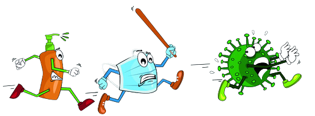

MOST RISK FOR COVID 19
COVID-19 is often more severe in people who are older than 60 years or who have health conditions like lung or heart disease, diabetes or conditions that affect their immune system.
If you’re at high risk, know what to do, and take the right actions now to protect yourself.
If you’re not at high risk, do your part to prevent the spread of coronavirus to those who are.
COVID-19 is often more severe in people 60+yrs or with health conditions like lung or heart disease, diabetes or conditions that affect their immune system.
- Help Protect Friends and Family who are at Higher Risk of severe COVID-19:
- Practice good hand and respiratory hygiene.
- If you have symptoms, like fever or cough, avoid close contact to others.
- Be supportive and communicate by phone or messaging.
- Run errands for those at higher risk and help them stock up needed supplies.
- Postpone social gatherings - make it virtual!
- Higher Risk of severe COVID-19? PREPARE NOW!
- Plan ahead with your doctor on when to seek routine care and what to do if you were to get sick.
- Make sure all your vaccinations are up to date.
- Have sufficient quantity of your regular medication, mnimize trips outside your home.
- Limit in-home services and visitors to what is essential.
- Keep up to date on national public health advice.
- Help Protect Friends and Family who are at Higher Risk of severe COVID-19:
- Practice good hand and respiratory hygiene.
- If you have symptoms, like fever or cough, avoid close contact to others.
- Be supportive and communicate by phone or messaging.
- Run errands for those at higher risk and help them stock up needed supplies.
- Postpone social gatherings - make it virtual!
- Help Protect Friends and Family who are at Higher Risk of severe COVID-19:
- Practice good hand and respiratory hygiene.
- If you have symptoms, like fever or cough, avoid close contact to others.
- Be supportive and communicate by phone or messaging.
- Run errands for those at higher risk and help them stock up needed supplies.
- Postpone social gatherings - make it virtual!